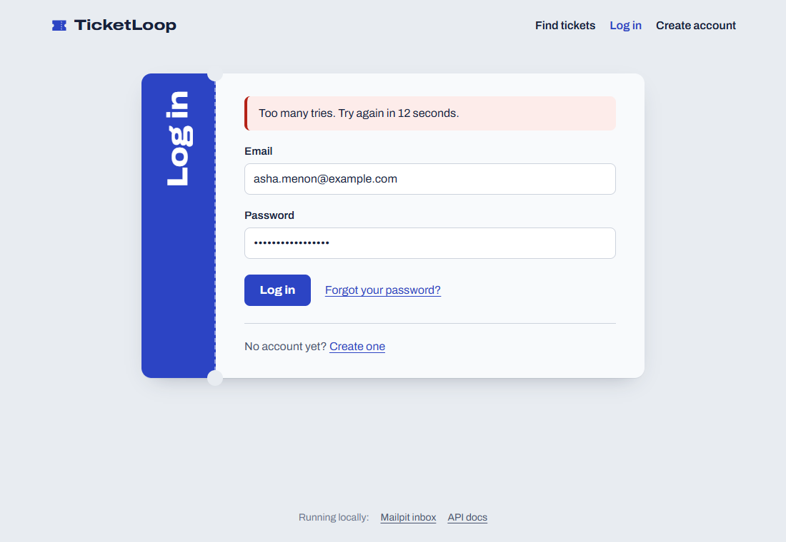
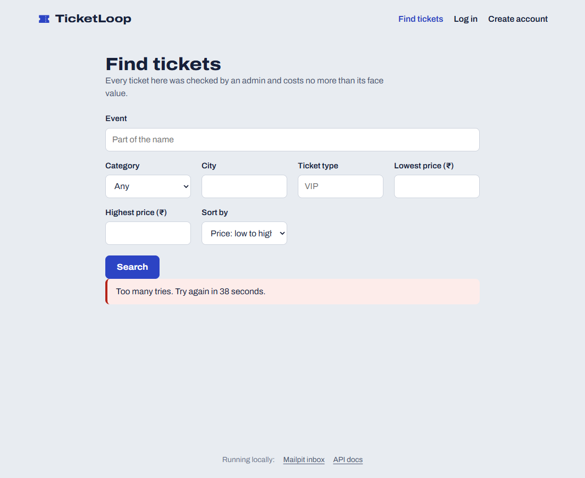
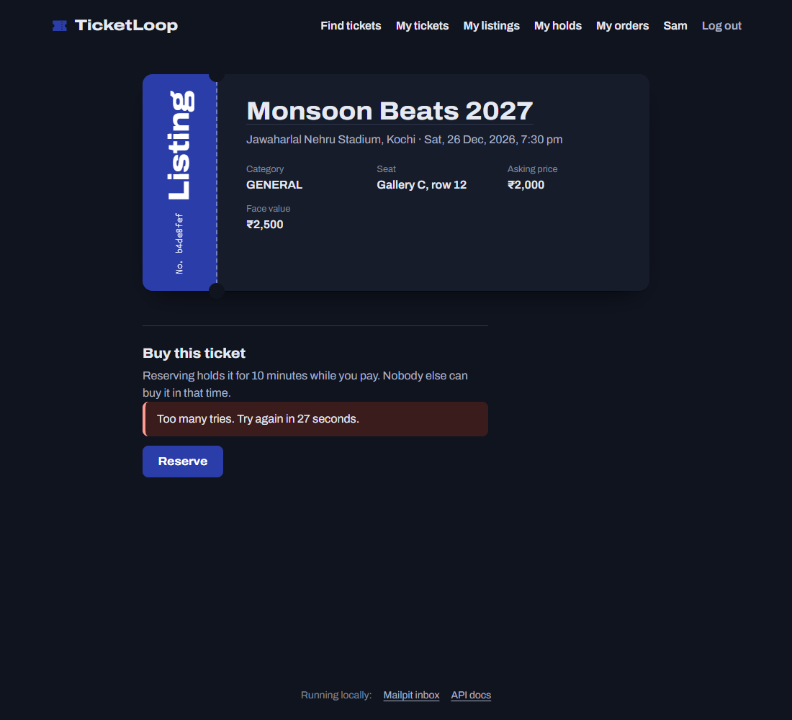

The 30-second answer
Search and the event page are cache-aside: look in Redis, and on a miss ask Postgres and store the answer for 30 to 60 seconds, a different time for each key so a batch filled together doesn't expire together. The key holds every filter, the sort and the limit, hashed, so two different searches can never share a page.
Invalidation is by version number. Every key contains the current version of what it was built from, like cache:search:listings41:…. Any commit that writes to listings bumps that number, so the next reader builds a new key and goes to Postgres; the old entries are never deleted, just never looked up again. The bump happens after the commit, and it's done by the database session itself, so no write in the API or the worker can forget it.
The rate limits are token buckets, one Lua script that refills, takes a token and saves in one atomic step on Redis's own clock. Five logins a minute per email and address, ten reservations and ten payment attempts per user, sixty searches per address. Over the limit is a 429 with Retry-After, and the form counts it down. If Redis is down, the request that finds out pays one timeout; after that no request asks Redis, a background ping checks every five seconds for its return, and everything is served uncached and unlimited meanwhile.
What I built
- Redis in the stack
redis:8.4.0-alpinein Compose and CI, with no persistence: it holds nothing that can't be rebuilt. One client per process, with a 0.25 second timeout and no retries.docker-compose.ymlapp/infrastructure/redis/client.py - The cache
versions(),get(),set()with a jittered expiry, andbump(). Every Redis error is caught, counted and trips the breaker; the caller just sees "not cached".app/infrastructure/redis/cache.py - The breakerAfter a Redis error, no request asks Redis again until a background
PING, every 5 seconds, gets an answer. Without it, a dead Redis would cost every request a timeout. It logsredis.unavailableonce per outage andredis.availablewhen Redis is back.app/infrastructure/redis/breaker.py - Invalidation by the sessionHooks on every SQLAlchemy session: any insert, update or delete on
listingsoreventsmarks it, whether a state machine's conditionalUPDATE, a bulk one or an object flushed. On commit the marked versions are bumped; on rollback the marks are dropped. The API's sessions and the worker's both carry the cache.app/infrastructure/redis/invalidation.pyapp/workers/runtime.py - Cached routes
cached_json()reads the versions, builds the key, and answers raw JSON withX-Cache. The first page ofGET /listingsandGET /events/{id}/listings, andGET /events/{id}. Later pages and anything that depends on who's asking are never cached.app/api/caching.pyapp/modules/discovery/router.pyapp/modules/events/router.py - The token bucketOne Lua script: read the tokens and when they were last counted, add what has dripped in since by Redis's
TIME, take one or say how long until the next, save, and set the key to expire once it would be full again.app/infrastructure/redis/limiter.py - The limitsA dependency per route: reserve and payment intents per user, both searches per address. Login and the password-reset request call it with the email, trimmed and lowercased and hashed, plus the address, before the password is checked.
app/api/rate_limits.pyapp/modules/identity/router.py - CountersHits, misses, bypasses, errors, and allowed, refused and skipped requests, counted in each process. M11 puts them on
/metrics.app/infrastructure/redis/stats.py - The message
ApiErrorkeepsRetry-Afterand when it arrived. Every form shows one message for a 429, "Too many tries. Try again in 12 seconds.", counting down to "You can try again now."frontend/src/lib/rateLimit.tsfrontend/src/components/Form.tsx
A search, a reservation, the next search
Three requests a few seconds apart, and what Redis and Postgres each do.
- 1The first search misses
MGET cache:version:listingssays 41. The key iscache:search:listings41:<hash of the filters, sort and limit>. Not there, so Postgres runs the search, the JSON is stored for, say, 47 seconds, and the answer saysX-Cache: MISS. - 2The second search hits
Same filters, same version, same key. Redis has it: the stored bytes are sent as they are, with
X-Cache: HIT. Postgres isn't asked. - 3Someone reserves
The reservation's conditional
UPDATE listings … WHERE status = 'ACTIVE'marks the session. The transaction commits; then the hook runsINCR cache:version:listings, now 42. Only the transaction's own commit counts: the reservation released a savepoint on the way, and that bumps nothing. If Redis can't be reached right then, the commit has still happened: the bump is owed, and made by this process's first call to Redis once it answers. - 4The next search misses
The version is 42, so the key is new. Postgres runs the search; the reserved ticket isn't in it. The page stored under 41 is still in Redis, and expires on its own.
- 5A buyer with the old page
Someone who loaded the page before the reservation clicks the ticket and presses Reserve. The conditional
UPDATEmatches no row:409 listing-not-available, the same as without a cache. Redis decides what a page shows, never what happens.
# app/api/caching.py: the version is read before Postgres is
seen = cache.versions(*depends_on) # MGET, one round trip
key = f"cache:{name}:{versions}:{sha256(params)[:32]}"
found = cache.get(key)
if found is not None:
return answer(found, "HIT")
body = compute().model_dump_json().encode() # Postgres
cache.set(key, body) # 30 to 60 s, jittered
return answer(body, "MISS")Why the version is read first, and bumped after the commit
A reader and a writer at the same moment. If the reader reads version 41, then queries Postgres, and the writer commits and bumps to 42 in between, the reader stores a page that may be from before the commit, under 41. Nobody looks up 41 again. Had the writer bumped before its commit, the reader could read 42, query Postgres before the commit is visible, and store the old rows under the new version, where everyone would find them for up to a minute. A test checks the bump runs after the session's savepoint is released, and fails if the hook is moved to before_commit.
The trade-off: fail open
When Redis is down, the limiter lets everything through. I chose that on purpose. The alternative, refusing every login and every reservation until Redis is back, turns a cache outage into a full outage, and the cache is the least important thing we run.
What it costs: while Redis is down, nobody is rate limited, so a password-guessing script gets as many tries as it can send. What's still in its way: every login runs Argon2id, about 50 milliseconds of CPU and 64 MiB of memory per guess on my laptop, so each core checks twenty-odd guesses a second at most, whoever sends them, and every failed login is in the logs. An outage long enough to matter shows up as redis.unavailable in the logs and as counters on /metrics from M11, so someone notices. If this were a bank, I'd fail closed on login only; for a ticket marketplace, staying up wins.
Measured
On my laptop, against the Docker stack, the first page of an unfiltered search: 7.9 ms on a miss, 5.1 ms on a hit (the median of 20 each, by curl -w %{time_total}, with the version bumped before every miss). That's with seven listings on sale, so Postgres had almost nothing to do and most of both numbers is the trip through Docker's network on Windows. What the cache is for shows up under load, when a thousand people load the same page: M12 runs that, cache on against cache off.
And with Redis stopped: the first search took 3.96 s (the stopped container's name failing to resolve), the next 29, one every half second, about 7 ms each, all BYPASS. Started again, the background ping found it within 6 seconds and searches were MISS, then HIT. One log line each way.
Screens
There's one new thing on screen, the same on every form that can be refused: log in, reset a password, search, reserve, pay. It reads Retry-After and counts down.



Decisions
The cache
Version numbers in the keys
Instead of deleting keys on write
Deleting means knowing every key a change affects: every search that might include that listing, with every filter. A version makes them all unreachable with one INCR.
Invalidated by the session
Instead of a call in each service
A call in each service works until someone writes a new path and forgets it. The session sees every write, including the state machines' raw UPDATEs and the worker's.
One events version
Instead of one per event
A bulk UPDATE doesn't say which events it touched without parsing its WHERE. Admins change events a few times a day; throwing away every event page then costs nothing.
Cache the first page only
Instead of every page
Almost everyone looks at the first page. Later pages are keyed by a cursor, so they'd rarely be asked for twice before expiring.
30 to 60 seconds, jittered
Instead of a fixed expiry
Entries filled together would expire together and send every reader to Postgres at the same moment. Spread over 30 seconds, they don't.
Store the JSON bytes
Instead of storing the objects
A hit sends the bytes as they are, with no parsing or validation. And the body on a hit is byte for byte the body on a miss.
The limits
A token bucket
Instead of a fixed window
A fixed window allows twice the limit across a boundary, five at 0:59 and five at 1:00. A bucket allows a burst up to the limit, then a steady drip.
One Lua script
Instead of GET then SET
Two requests at once would both read one token left and both take it. A script runs alone in Redis, so read, refill and take are one step.
Redis's clock
Instead of the API's clock
Four API processes have four clocks. The bucket's refill must be measured with one.
Login on email and address
Instead of address only
Address only, a whole office or a phone network shares one limit. Email only, anyone can lock someone out of their account. Both together slow down guessing one account from one place, which is the attack.
The socket's address
Instead of X-Forwarded-For
Anyone can write that header and get a new bucket for every request. Behind a real proxy, the proxy sets the address.
Fail open
Instead of failing closed
See the trade-off above: staying up beats perfect throttling, and Argon2id still slows the guesses.
Interview questions
Answer out loud first, then open.
What is cache-aside?
The application owns the cache. On a read it looks in Redis; on a miss it asks the database and stores the result. Writes go to the database only. The cache never talks to the database, so if it's empty or gone, the application still works, just slower.
How do you invalidate?
With version numbers. Each key includes the current version of the tables it depends on. After a commit that writes to listings, I increment cache:version:listings. Every reader after that builds a different key and misses. The old entries aren't deleted; they expire on their own.
Why after the commit and not before?
Because a reader could refill the new version from Postgres before the commit is visible, and serve the old rows under the new version until it expires. After the commit, the worst case is a reader that read the old version storing its page under it, where nobody will look again.
How do you make sure every write invalidates?
I don't rely on the writes. SQLAlchemy session hooks see every insert, update and delete on the two tables, including bulk updates and the state machines' conditional ones, and mark the session. When it commits, the hook bumps. A new write path can't forget, because it goes through a session. The hand-run scripts are the exception: their sessions carry no cache, so what they change shows within a minute.
Can a user see stale data?
On search, for a moment: a listing reserved half a second ago can still appear on a page that was loaded before. That's acceptable because nothing is decided from the page. Reserving runs a conditional update against the row, and gets a 409 if it's gone. A stale page costs a click, never a double booking.
What's a cache stampede, and what do you do about it?
When a popular entry expires, every reader misses at once and all of them hit the database. I spread expiries over 30 to 60 seconds so entries filled together don't expire together. For one very hot key you'd add a lock or early refresh; I didn't need it at this scale.
Explain your rate limiter.
A token bucket per route and caller, in Redis. The bucket holds, say, five tokens and refills at five a minute. Each request takes one; with none left it's refused with a 429 and Retry-After. The whole thing is a Lua script, so reading, refilling and taking happen atomically, and it uses Redis's clock so every API process agrees.
Why a token bucket?
It allows a short burst, which real people do, a double-click or a retry, and then limits the rate. A fixed window can let through twice the limit across a window boundary. A sliding log is exact but stores every request.
What if Redis goes down?
Every call to Redis has a quarter-second timeout and no retries. The first failure opens a breaker, and from then on no request asks Redis: a background thread pings it every five seconds and closes the breaker when it answers. That matters more than it sounds. In Docker a stopped container's name takes about four seconds to fail to resolve, which no socket timeout covers, so letting a request try again every five seconds would stall a request every few seconds for the whole outage. Cached routes answer from Postgres with X-Cache: BYPASS; the limits allow everything. There's a test that points the app at a Redis that isn't there and checks every cached route gives the same answer as with the cache, all of them within three seconds.
Isn't failing open dangerous?
For login, during the outage, yes, a bit. I weighed it against refusing every request while the cache is down, which is worse for every real user. Argon2id still makes each guess expensive, and the outage is logged and counted. For a bank's login I'd fail closed.
Does a 429 on login leak whether an account exists?
No. The limit is checked before the password, keyed on whatever email was typed, so an unknown email and a real one are refused alike, with the same body. There's a test for that.
How would you know the cache is working?
Every cached answer says X-Cache: HIT, MISS or BYPASS, so a load test can count the hit ratio from outside, and each process counts them too; M11 puts those counters on /metrics.
Traps and fixes
- A test that passed for the wrong reason. To prove the bump runs after the commit, my first test asked the session
in_transaction()inside the bump. SQLAlchemy keeps the transaction object until the hook returns, so it said yes. The test now asks whether the session's savepoint has been released, and I checked it fails when the hook is moved tobefore_commit. - A rate-limit test racing the refill. Draining a bucket of 600 a minute and expecting the 601st to be refused failed: ten tokens drip back every second while the test drains. It drains until the first refusal now, then checks a token comes back.
- The browser tests and the limit. They log in, search and reserve far more than five times a minute from one address. They run with the limits raised out of the way, and the countdown is tested with a 429 the test serves itself.
- A negative
Retry-Afterread as a date. HTTP allows seconds or a date, andDate.parse("-3")is a valid year. A date has to have letters in it now. - A savepoint that bumped too early. The review found it: SQLAlchemy calls
after_commitwhen a savepoint is released, not only on the real commit. Reserving, a failed payment and the expiry job each release one before they commit, so the version went up while the transaction was still open, the very race the order was meant to prevent. The hook ignores savepoints now, and tests watch the reserve route and the expiry job bump once, after the commit. - A bump lost to a blip. Also the review's: one timeout opens a process's breaker for a few seconds, and a commit in that window skipped its bump, so other processes kept serving the old page for up to a minute. That bump is owed now, and made by the first call once Redis answers.
- A stopped Redis cost four seconds, not a quarter. I stopped the container to check what the docs promised and timed it: its name took four seconds to fail to resolve, which the socket timeout doesn't cover, and the breaker let a request try again every five seconds. A background ping checks for Redis now; only the request that finds it gone waits.
- My listings, lit on someone else's listing. Found while taking these screenshots: every listing's address starts with
/listings, so the nav marked My listings as the current page when a buyer looked at a ticket. It matches the exact path now, with a browser test.
Known gaps, on purpose
- No lock against a stampede on one hot key. Jitter spreads expiries; a single very popular page still sends its readers to Postgres together, once a minute.
- One limit per address for search. A whole office behind one address shares sixty a minute. Signed-in search could count per user; it doesn't yet.
- The hand-run scripts don't bump.
scripts/expire_reservations.pyand the others build sessions with no cache, so what they change shows within a minute. In Docker, beat runs the same jobs with the worker's sessions, which do bump. - Counters per process. Each API process counts its own hits and refusals; M11 exports them and Prometheus adds them up.
Check it still works
docker compose up -d db mailpit minio fakepay rabbitmq redis worker beat relay
uv run pytest tests/integration/test_cache.py tests/integration/test_cached_routes.py
uv run pytest tests/integration/test_rate_limits.py tests/unit/test_redis.py
curl -si localhost:8000/api/v1/listings | grep -i x-cache # MISS, then HIT
docker compose stop redis # BYPASS, same answers
docker compose start redis
REQUIRE_POSTGRES=1 REQUIRE_STORAGE=1 REQUIRE_BROKER=1 REQUIRE_REDIS=1 uv run pytest # 1174 tests, what CI runs
cd frontend && npm run dev # localhost:5173
npm test # 160 unit tests
npm run e2e # 21 browser tests, with the cache on
gh run list --workflow ci.yml --limit 3